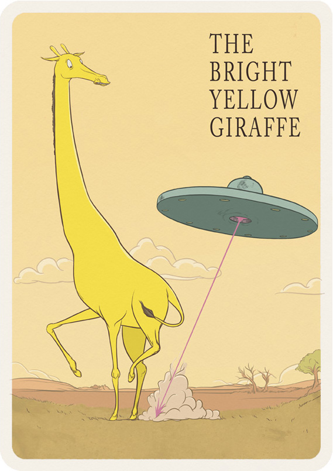
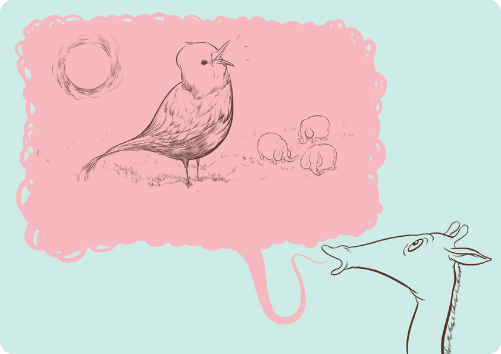
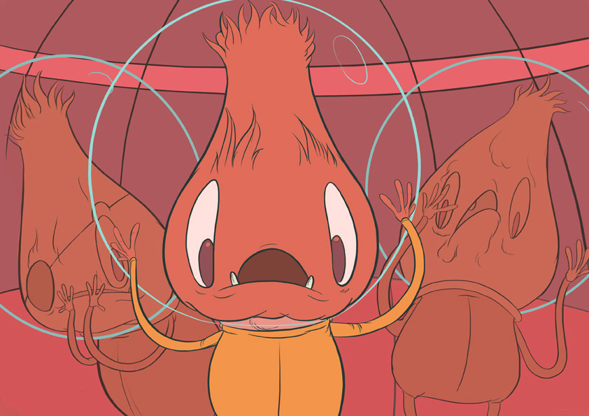
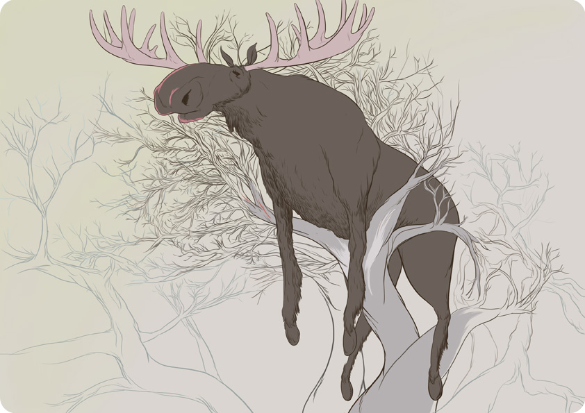
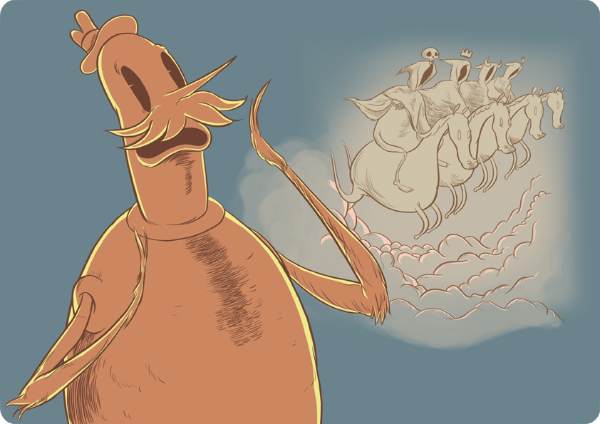

I've written a kids' book, The Bright Yellow Giraffe, a whimsical adventure featuring a giraffe that's bright in colour alone, and now I need the time to produce the 60 or so pages of pictures necessary to illustrate the story, design the layout, and subsequently turn it out for iPad and other tablet devices.
Buying a copy of Story Horse, a limited edition giclee print via the Black Church Print Studio, will help make all of this possible. For more info, or if you are interested in purchasing any of the prints below, please contact me at tom@cerealtom.com or via facebook.



